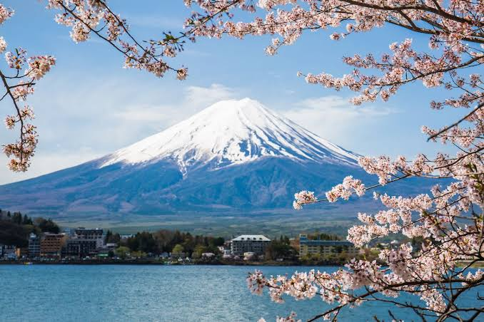
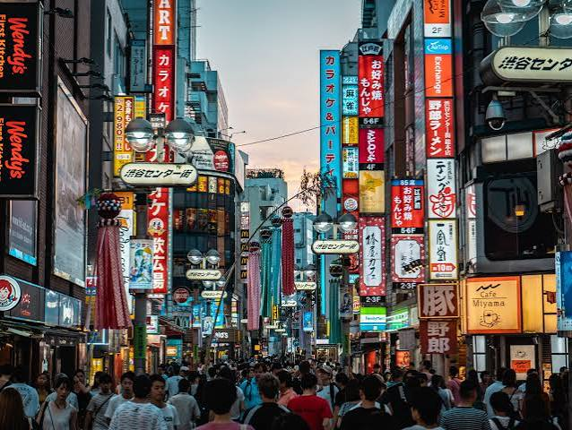
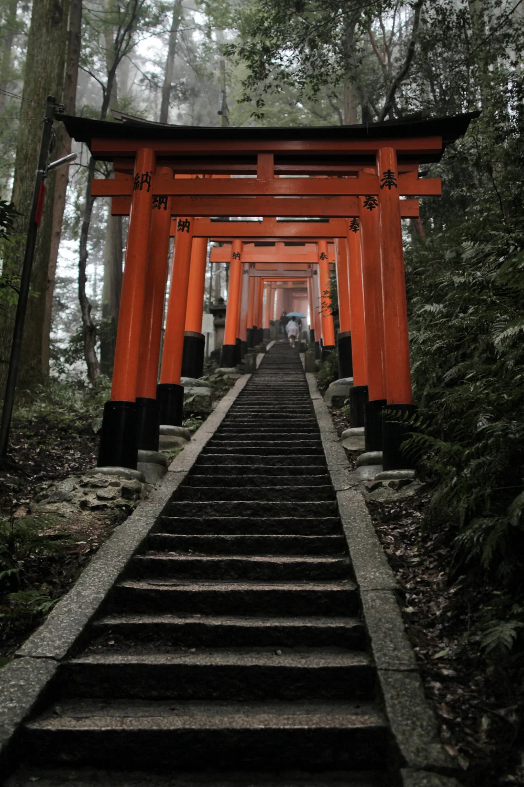
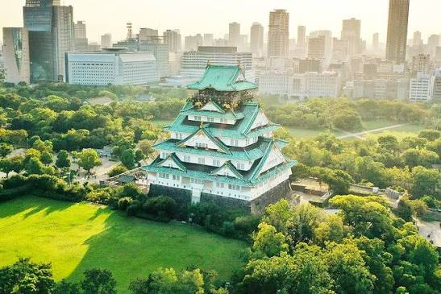

History and Tourist Sites
Japan has a long history and many famous places to visit, from old temples to modern cities.
Famous Places

Mount Fuji

Tokyo

Fushimi Inari Shrine in Kyoto

Osaka Castle
Important Periods in History
1
Heian period, when Kyoto became the capital
2
Edo period, when the samurai ruled
3
Meiji period, when Japan became modern
Places at a Glance
| Place | City | Known For |
|---|---|---|
| Mount Fuji | Honshu | Tallest mountain |
| Fushimi Inari | Kyoto | Red gates |
| Osaka Castle | Osaka | Historic castle |